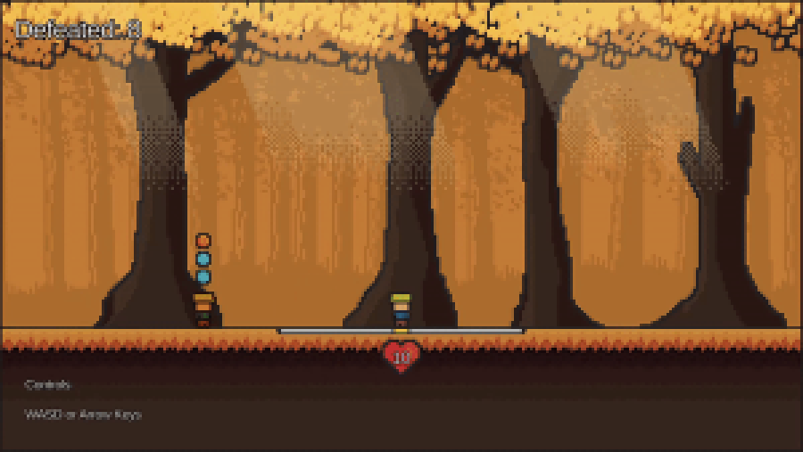

Personal · in development
Reprise
A solo action game that brings the counter-focused combat of Sekiro: Shadows Die Twice to gunplay.
- Role
- Solo: code and pixel art
- Engine
- Unity, C#
- Status
- In development
- Platforms
- PC, browser prototype
Overview
Reprise started as a browser prototype called Gunslinger's Reprisal and grew into a downloadable build. It takes the timing and counter-attack feel of Sekiro's sword fights and rebuilds it around guns.
What I built
- All gameplay code, from player combat to enemy behaviour.
- An event-driven architecture built on ScriptableObject events, so systems such as combat, animation and UI react to game events instead of referencing each other directly.
- Enemy attacks built as data-driven combo strings, with a timed counter window against incoming bullets.
- Separate stamina and health meters for the player and enemies, plus a special meter built up in combat.
- All of the pixel art and animation.
The design problem
Counter-based combat lives or dies on telegraphing: the player has to read an attack before it lands. In 3D, skeletal animation can stretch and ease a wind-up as much as the design needs. Hand-drawn 2D sprites have only a few frames per move, so the same readability is much harder to get. That's the problem I'm working through now: how much of the warning should come from animation, and how much from timing, sound and effects.
Links
Screenshots
